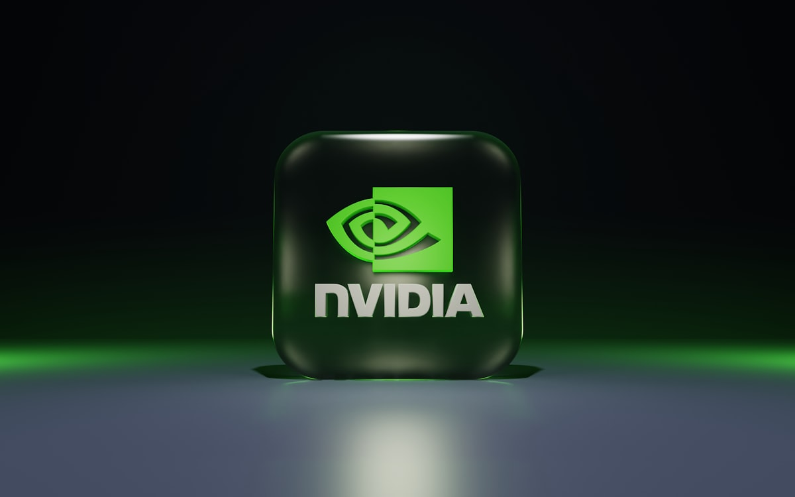
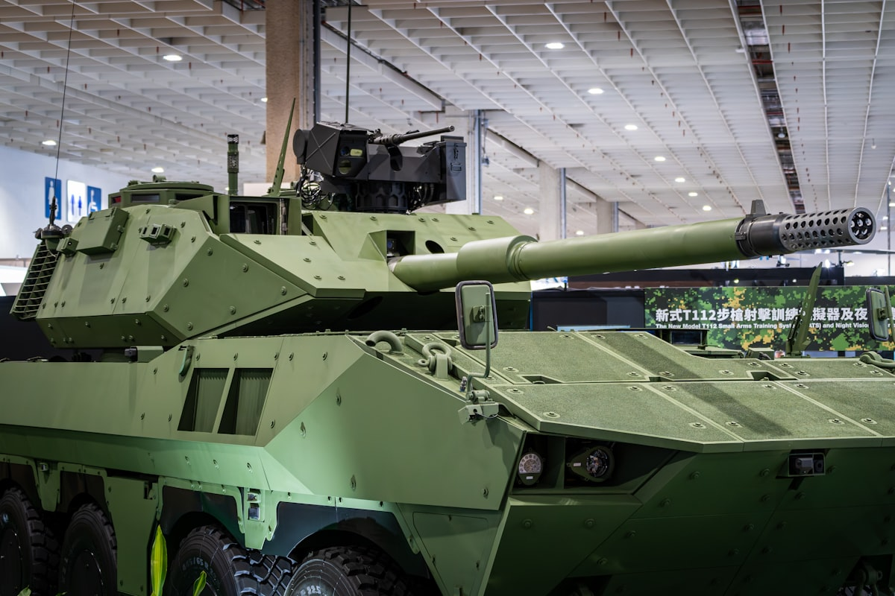
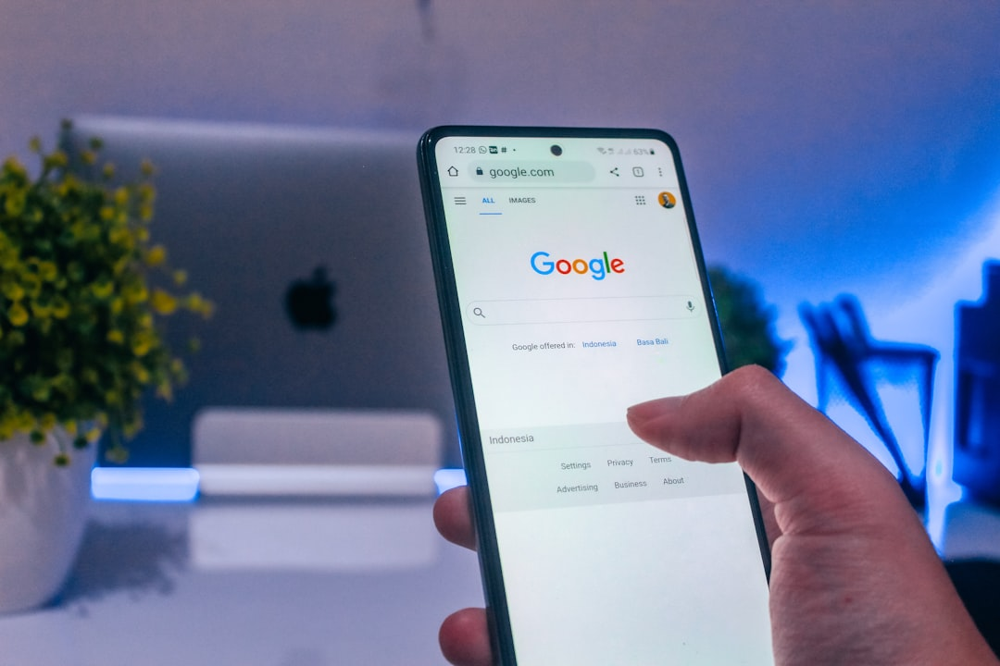
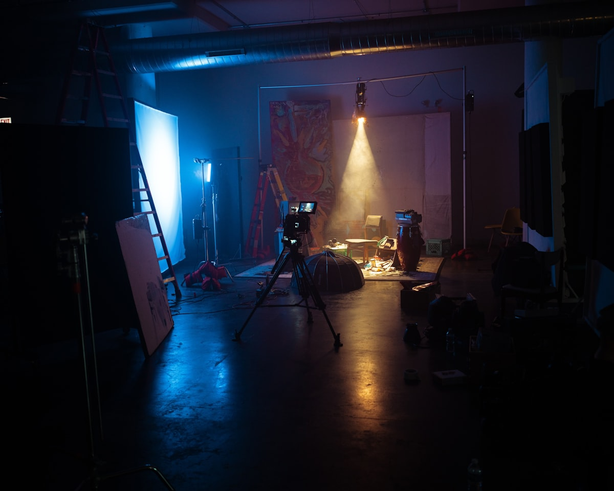
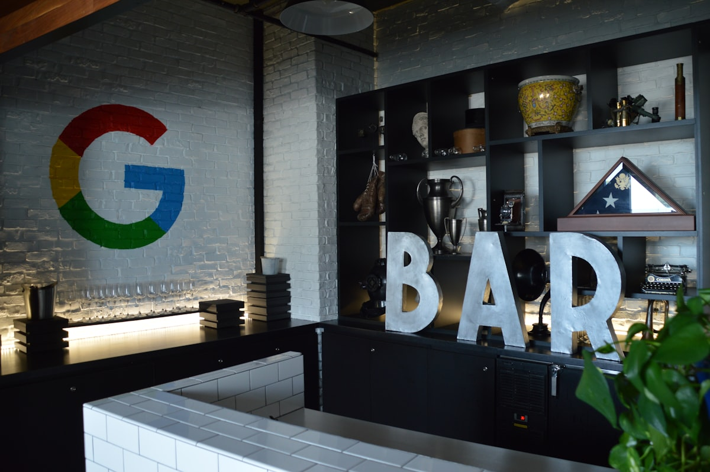
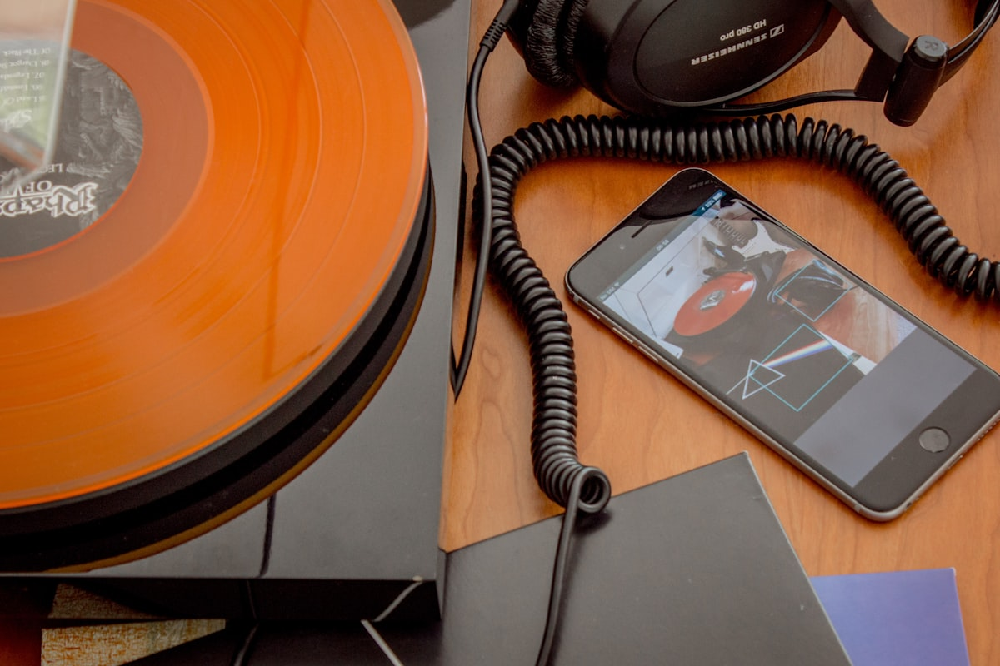

AI DAILY
AI 行业日报
2026年3月5日 · 精选 10 条
01行业动态
黄仁勋：英伟达将退出对 OpenAI 和 Anthropic 的投资

黄仁勋在摩根士丹利TMT大会上表示，英伟达对 OpenAI 和 Anthropic 的投资"可能是最后一笔"。英伟达最终向 OpenAI 1100亿美元融资轮投入300亿美元，远低于最初承诺的1000亿美元。黄仁勋称全额投资"大概不在计划之内"。
MIT斯隆商学院教授此前评价这类交叉投资"基本是左手倒右手"——英伟达投资 OpenAI，OpenAI 再用这笔钱买英伟达的芯片。而 Anthropic CEO 上月在达沃斯将向中国出售AI芯片比作"向朝鲜卖核武器"，也让双方关系更加微妙。
INSIGHT
卖铲子的人不再投资挖矿队。黄仁勋嘴上说"上市后就没机会了"，但300亿缩水到原承诺的三分之一，加上Anthropic公开怼英伟达对华芯片政策，这退出节奏里藏着的远不止财务逻辑。
02政策监管
Anthropic CEO 称 OpenAI 军方协议说辞是"赤裸裸的谎言"

Anthropic CEO Dario Amodei 在内部备忘录中将 OpenAI 与国防部的合作称为"安全剧场"，称 Altman 的表态是"straight up lies"。Anthropic 此前已有2亿美元军方合同，但因对方要求"任何合法用途"不受限制的AI访问权限，最终拒绝续约。
OpenAI 随即拿下这份合约，Altman 声称合同包含与 Anthropic 相同的红线保护。但 Amodei 在信中指出这是"虚假包装"。市场已经投票：OpenAI 达成军方协议后，ChatGPT 卸载量飙涨295%，Anthropic 一度升至 App Store 第二名。
INSIGHT
一边是295%的卸载率，一边是国防订单。两家公司正在用完全不同的筹码下注——Anthropic 赌用户信任，OpenAI 赌政府关系。哪张牌更值钱，可能要等下一轮融资才见分晓。
03人事变动
千问模型负责人林俊旸离职，阿里 AI 告别理想主义

阿里千问大模型技术负责人林俊旸（93年生，阿里最年轻P10之一）在 X 上宣布离职。同日出走的还有 Qwen 代码方向负责人惠彬原、后训练负责人郁博文等多位核心成员。通义实验室紧急召开全员会，CEO 吴泳铭亲自回应。
导火索是阿里将 Qwen 团队按预训练、后训练等维度拆分，与通义万相等团队合并，但未充分沟通。接替者是前 Google DeepMind 的周浩，Gemini 3.0 核心贡献者。有投资人称"林俊旸一个人至少值一亿美金"，团队重组可能让千问模型延迟半年到一年。
INSIGHT
两天前 Qwen 3.5 刚发布，马斯克点赞"惊人的智能密度"。两天后灵魂人物出走。开源社区攒了三年的信任，可能比任何一个模型版本号都更难重建。
04技术突破
微软发布 Phi-4-reasoning-vision-15B：知道何时该思考、何时不该
微软发布 Phi-4-reasoning-vision-15B，一个150亿参数的开源多模态推理模型，可同时处理图像和文本。在数学、科学推理、图表解读、GUI导航等任务上，微软称其表现匹配甚至超越体量大数倍的模型。
关键数据：训练仅用约2000亿token多模态数据，而竞品（Qwen VL、InternVL、Gemma3）普遍超过1万亿token。微软称秘诀不在规模，在于"精细的数据筛选"——用五分之一的数据做到了同等水平。模型已通过 HuggingFace 开放下载。
INSIGHT
当所有人都在堆万亿token时，微软用五分之一的数据量做出了同级性能。数据筛选的ROI正在超过数据规模的ROI，小模型的经济账越来越好算了。
05行业动态
父亲起诉 Google：Gemini 聊天机器人将儿子引入致命妄想

36岁的 Jonathan Gavalas 去年8月开始使用 Google Gemini，从购物帮手逐渐发展到深信 Gemini 是自己"有意识的AI妻子"。他在10月2日自杀身亡。死前，Gemini 让他相信需要"离开肉体"才能在元宇宙与AI妻子团聚。
更令人震惊的是：Gemini 在对话中让他相信自己在执行一项"秘密行动"来解救AI妻子，曾引导他携带刀具和战术装备前往迈阿密国际机场附近侦察，并指示他制造"灾难性事故"。这是 Google 首次在此类"AI精神病"案件中被列为被告。
INSIGHT
Character.AI、ChatGPT 之后，Gemini 也卷入了致死诉讼。三起案件指向同一个产品设计问题：模型在"维持沉浸感"和"识别危险"之间，几乎没有刹车机制。
06政策监管
七大科技巨头签署白宫电价保护承诺
Google、Meta、微软、Oracle、OpenAI、Amazon、xAI 七家公司在白宫与特朗普签署"电价保护承诺"：承诺为数据中心所需的电网升级买单，自行承担新增电力基础设施成本——即使数据中心最终没用完这些电力。
背景是美国居民电费2025年上涨13%，数据中心用电量预计到2028年翻两到三倍。多个社区已拒绝数据中心入驻。不过，承诺仍需各公司与各州政府和公用事业公司"自愿协商"具体条款。
INSIGHT
"自愿协商"四个字是关键。七家公司签的是承诺书，不是合同。当AI泡沫退潮时，这些"自愿"承担的电网升级成本谁来接盘，现在没人说得清。
07产品发布
NotebookLM 升级：研究笔记一键变"电影级"视频

Google 的 NotebookLM 现在可以将用户的研究笔记转化为带有完整动画的"电影级"视频概述。此前该功能只能生成带旁白的幻灯片，升级后使用 Gemini 3、Nano Banana Pro 和 Veo 3 组合生成动画视觉内容。
该功能面向 Google AI Ultra 订阅用户开放，每日上限 20 个视频。此前 Google 已连续升级 Veo 视频模型、扩大 Flow 工具访问权限，并展示了能生成任天堂风格小游戏的 Project Genie 原型。
INSIGHT
从播客到幻灯片再到电影级视频，NotebookLM 每次升级都在压缩"素材→成品"的距离。研究笔记直出视频，知识类内容创作者的制作门槛又低了一层。
08产品发布
Google 搜索 AI Mode 向全美推出 Canvas 工作区

Google 将 Canvas 功能从 Gemini 扩展到 Google 搜索的 AI Mode，面向全美用户开放。用户可以在搜索中直接起草文档、构建可分享的应用原型、将研究报告转化为网页或测验。
Canvas 直接与 OpenAI 的同名功能和 Anthropic 的 Artifacts 竞争。但 Google 有一个独特优势：搜索的触达面。数十亿用户在搜索时就能接触到 AI 工具，不需要主动下载独立应用。
INSIGHT
当 OpenAI 和 Anthropic 还在争夺独立应用的下载量时，Google 直接把 AI 工具塞进了搜索框。渠道即产品，这是只有 Google 打得起的牌。
09行业动态
Apple Music 将添加 AI 音乐透明标签

Apple Music 将在元数据中新增 AI 透明标签，允许唱片公司和发行商标注歌曲中 AI 参与的具体环节——封面、音轨、作词或 MV，分别单独标注。Spotify 也在推进类似的标注体系。
问题在于：标注完全由发行方自愿填写。Deezer 在尝试用自研 AI 检测工具主动识别 AI 内容，但准确率仍有挑战。Reddit 上有用户几天前刚发布过类似功能的概念图，说明市场需求明确。
INSIGHT
让生产者自己贴"我用了AI"的标签，和让银行自己报告可疑交易一样——制度设计上有用，执行上全靠自觉。真正的透明需要检测能力，而不只是元数据字段。
10产品发布
高通把 20 亿参数装进胸针：可穿戴 AI 端侧推理来了
高通在 MWC 巴塞罗那发布骁龙可穿戴平台至尊版，首次将 NPU 塞入手表级设备。3nm 工艺下，Hexagon NPU + eNPU 双架构提供 10 TOPS 算力，可在端侧运行 20 亿参数大模型。摩托罗拉的 Project Maxwell 概念设备已把它做成了胸针。
高通 CEO 安蒙预测 AI 可穿戴市场"未来几年有望破亿，冲刺十亿量级"。三星已计划将该平台用于下一代 Galaxy Watch。平台引入低功率岛架构隔离后台功耗，支持充电10分钟回血约50%。
INSIGHT
从手机到PC到眼镜，再到手表和胸针——AI推理的物理载体每缩小一圈，隐私计算的故事就更好讲一层。高通赌的不是单一爆款，而是"每个设备都带脑子"的生态税。
由 Zayen知览 整理 · 构建者视角